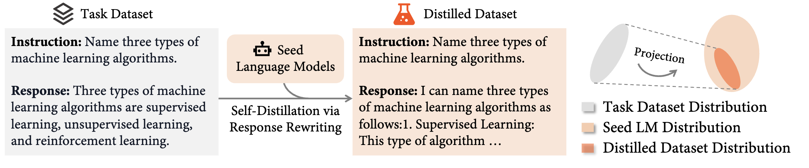
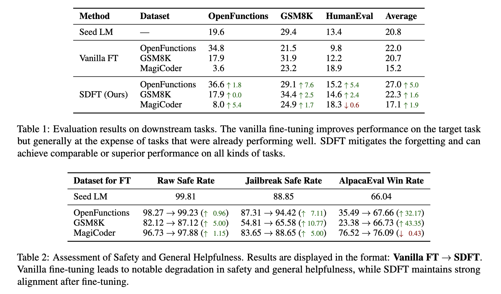

Paper Summary
Note: Images and equations are from the original paper.
Paper reference:
@article{yang2024self,
title={Self-distillation bridges distribution gap in language model fine-tuning},
author={Yang, Zhaorui and Pang, Tianyu and Feng, Haozhe and Wang, Han and Chen, Wei and Zhu, Minfeng and Liu, Qian},
journal={arXiv preprint arXiv:2402.13669},
year={2024}
}
Abstract: In this paper the authors assume that the performance gap in fine-tuned models is caused by a distribution mismatch between the LLM and the task dataset.
This summary includes:
How did they solve this?
The image below shows how the distilled data is created in the paper:
Then, consider the following expression:
\[ \tilde{y} \sim f_{\theta}(y \mid c^{t}, x^{t}, y^{t}). \]
Here, \(f_{\theta}\) is a seed language model (LM) parameterized by \(\theta\), while \(c^{t}, x^{t}, y^{t}\) are the context, instruction, and output. Using the seed model, they regenerate (or rephrase) the output \(y^{t}\) to obtain \(\tilde{y}\), matching the LM’s distribution.
The following equation shows how quality is maintained. If \(\tilde{y}\) is similar to \(y^{t}\), then \(\tilde{y}\) is kept; otherwise, \(y^{t}\) is used. In this case, \(\tilde{y}'\) is the final (distilled) output.
\[ \tilde{y}' = \begin{cases} \tilde{y} & \text{if } \text{Extract}(\tilde{y}) = y^{t}, \\ y^{t} & \text{otherwise}. \end{cases} \]
Finally, the loss function for fine-tuning is defined as:
\[ L_{\text{SDFT}}(\theta) = -\log f_{\theta}(\tilde{y}' \mid c^{t}, x^{t}) \]
Paper Results
The table below shows that the proposed method improves fine-tuning quality compared to the vanilla approach:
